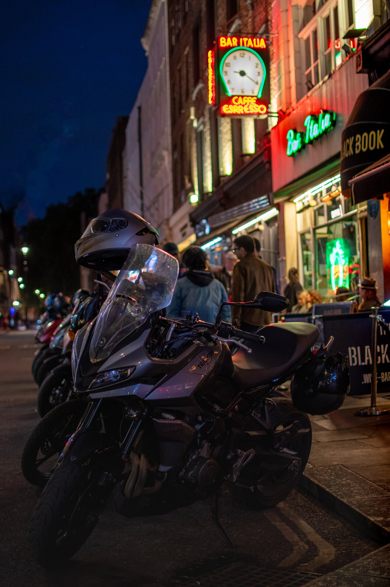
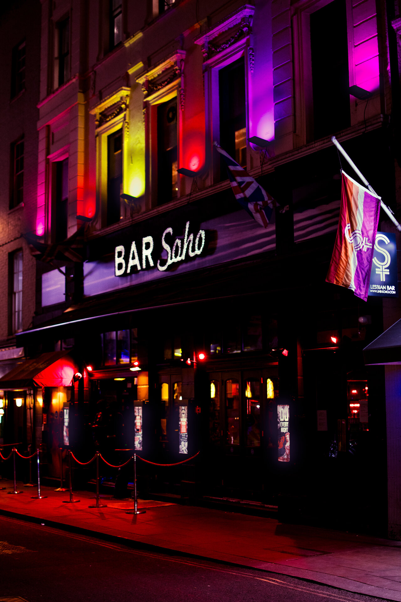
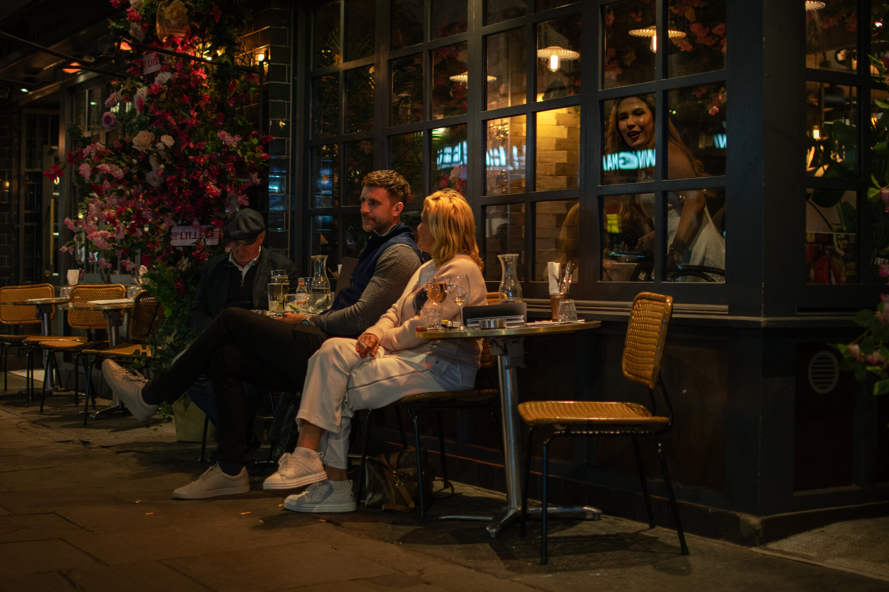
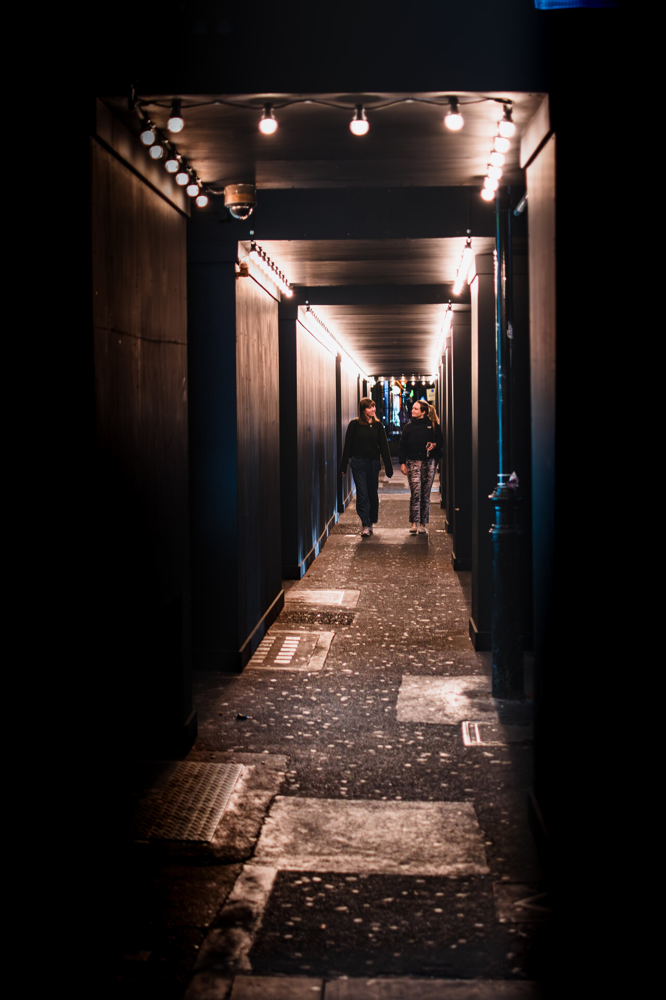
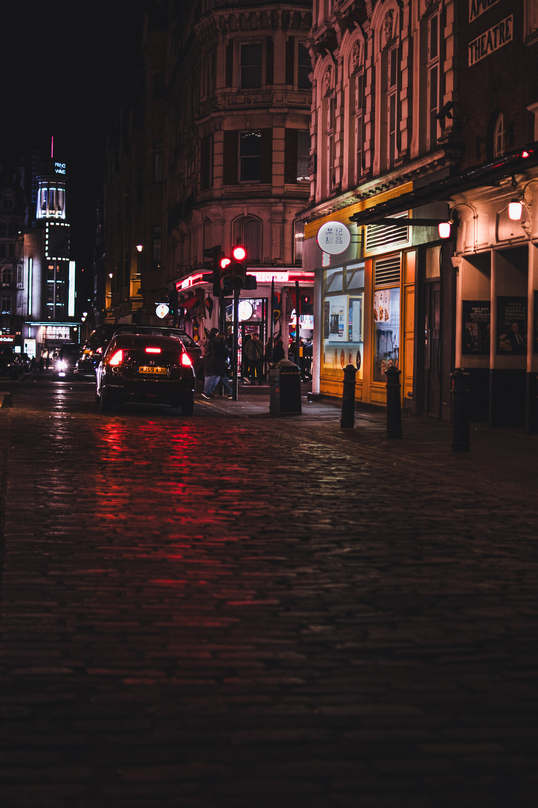
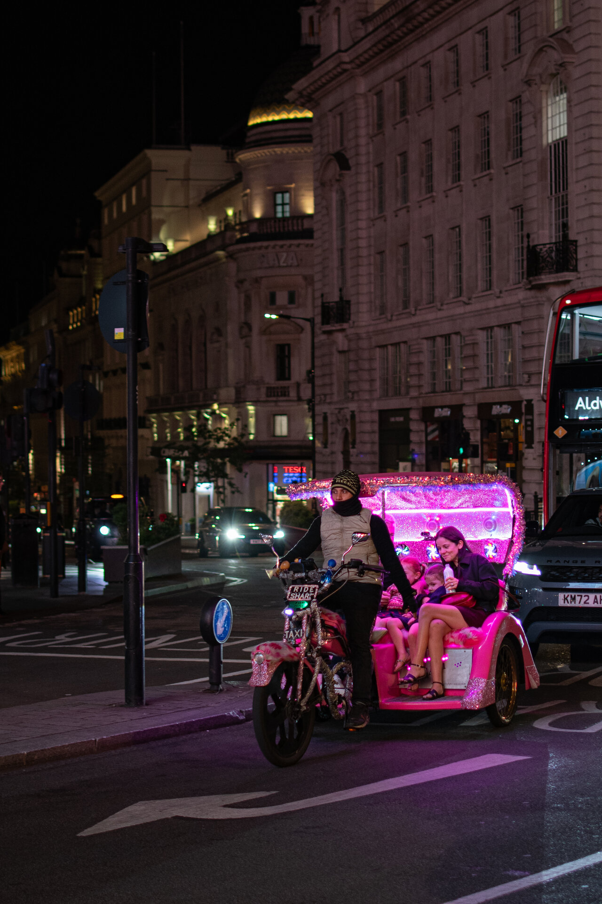
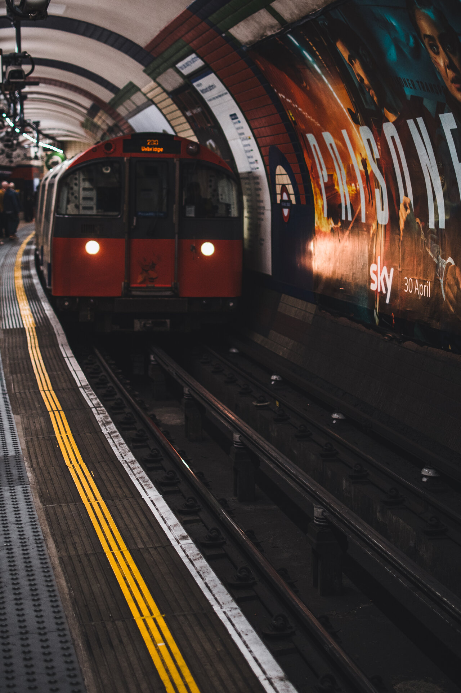
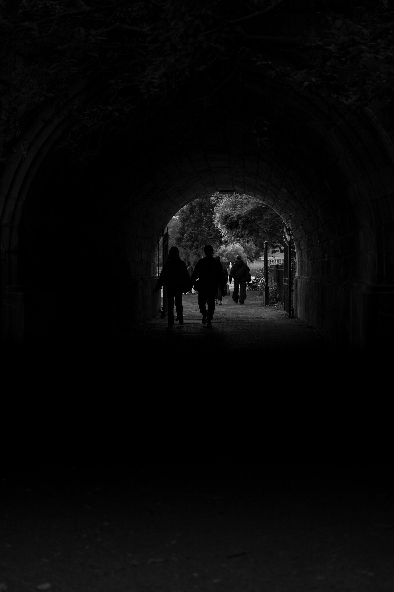
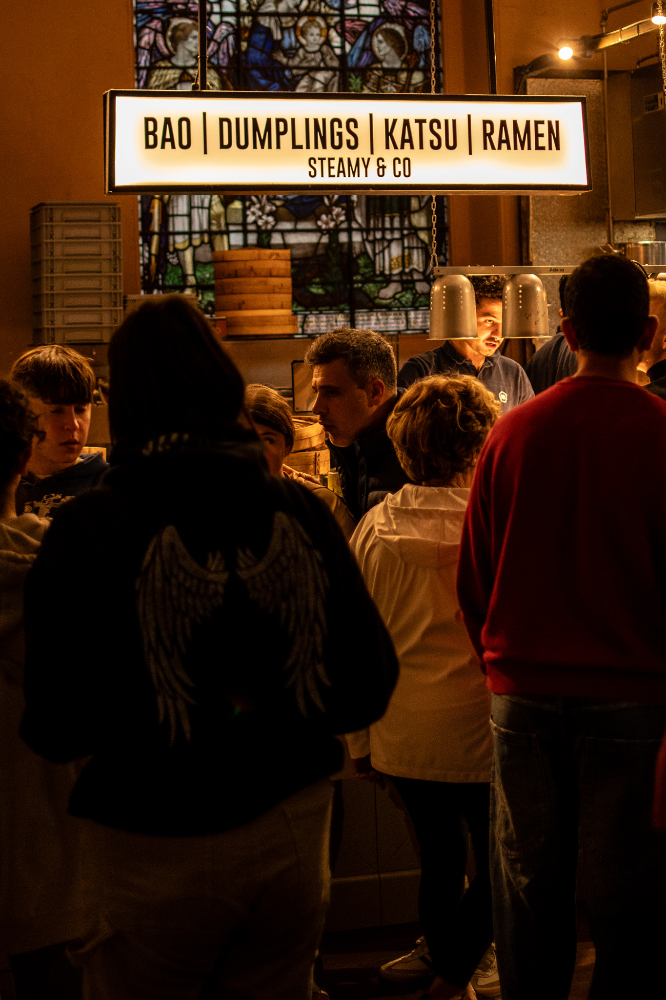
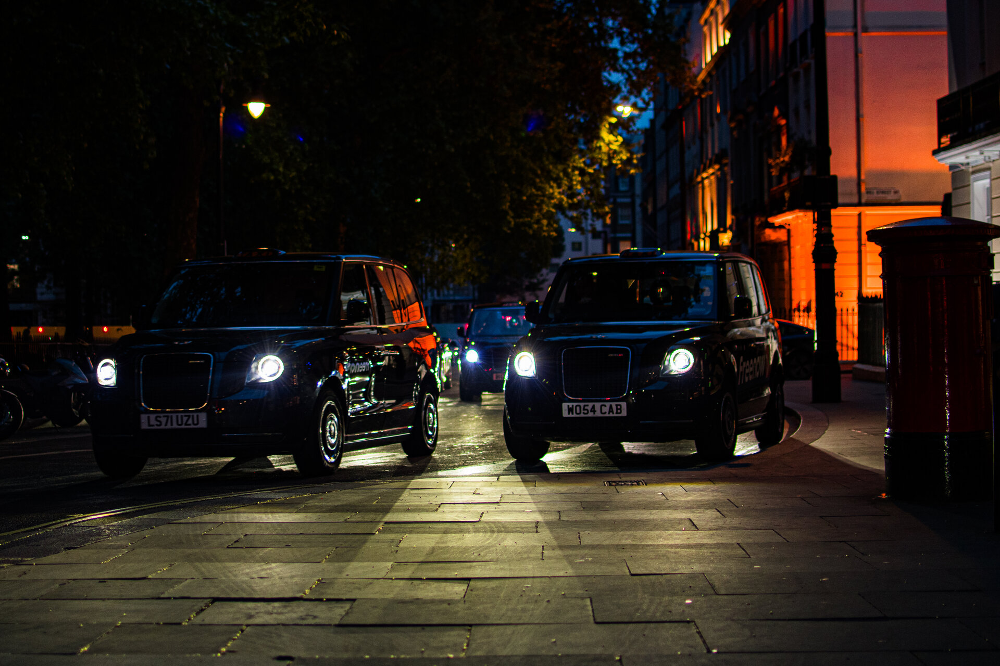

01Opening
Bar
Italia
Motorcycles parked outside Bar Italia in Soho — a Soho institution since the 1950s with a long history as a gathering point for riders, though it has always been more than that. Coffee, conversation, late nights. The bikes lined up outside after dark are just part of the character of the place.

02Neon
Met her in a club
down in old Soho
The neon on Bar Soho — pink, yellow, red, violet against the dark facade. Soho after dark leans into its own reputation, and this is the showier face of it. The Kinks had Soho figured out — mixed up, muddled up, shook up world. It still looks the part.

03Observation
Looking
Elsewhere
A couple at an outdoor table, engaged with each other and oblivious to me. The woman inside is a different story — she's looking out through the glass, possibly directly at me. Two separate worlds separated by a pane of glass, neither one aware of the other.
 04
04
Grit
Werewolves
of London
A dark figure leaning against a wall in a Soho alley, the only light coming from the sign above. This is the other side of Soho — the part that hasn't been gentrified away.

05Passage
Soho
Passage
A covered walkway somewhere in Soho — string lights along the ceiling, two women mid-conversation, completely unaware of the camera. I loved the geometry and symmetry here.

07Reflection
The Street
Gives Back
A little mist on the cobblestones. Reflections of taillights, stoplights, and storefronts mix on the wet street. You only really see this using a low angle from the street surface.

07Spectacle
Piccadilly
Circus
There's no shortage of great photographs of Piccadilly Circus — the crowds, the billboards, the controlled chaos. I was looking for something different, though, when the pink pedicab entered the roundabout. A mom and her two kids, completely at home in the middle of all of it.

08Underground
Mind
the Gap
A train entering Piccadilly Circus station on the Underground, the motion blur pulling the eye along the yellow lines on the platform edge.

09Passage
End of
the Tunnel
The tunnel under the Serpentine Bridge in Kensington Gardens — two figures walking together at the far end, silhouetted against the light beyond. An accidental discovery as I was about to cross the bridge when I noticed the path leading underneath and the resulting tunnel.

10Repurposing
Sacred
and Profane
A food hall built into a deconsecrated church — Mercato Mayfair — warm light, signage for dumplings and ramen, people crowded around tables under vaulted ceilings that once held something else entirely. London does this kind of repurposing without apology, and the result is usually fantastic.

11Closing
London
Black Cabs
The black cab coming toward the camera, headlights cutting through the dark. Classic London.